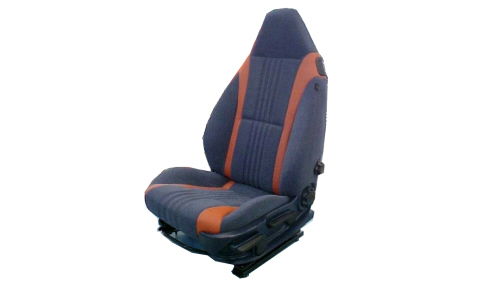
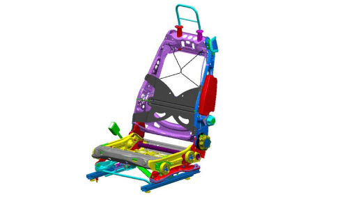

7045 FRONT SEATS
- Path
- Descriptions > 70 FITTINGS > 7045 FRONT SEATS
- Kind
- system description
- Applies to
- all engines; all production periods
- Interactive page
- https://sloeber94.github.io/elrnDB-aBrrSpdr/en/#/946001248
Applies to: all engines; all production periods
INTRODUCTION
The vehicle front seats feature a very sporty new design with a built-in head restraint.
The structure, regulation devices, padding and trim are optimised to ensure a high level of comfort with adequate restraint during a sporty drive.

Manual seat
The manual seat offers the following features:
- Reach adjustment (guides)
- Ride adjustment (only driver's seat)
- Cushion tilt adjustment (only driver's seat)
- Electrified backrest angle adjustment
- Manual two-way lumbar adjustment (only driver's seat)
- Easy-Entry with mechanical memory
- Internal sidebag module
- Passenger presence sensor
Electric seat
The electrically-adjustable seat offers the following features:
- Electrical reach adjustment (guides)
- Electrical ride adjustment
- Electrical adjustment of cushion tilt
- Electrical backrest angle adjustment
- Manual two-way lumbar adjustment
- Easy-Entry with three-position electronic memory
- Internal sidebag module
- Passenger presence sensor
- Heat pad
Seat structure
